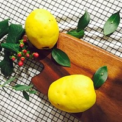

かりんの生産量 都道府県ランキング
上位3県と収穫量
かりんの収穫量が全国で最も多いのは香川県で、19 tです。全国（38 t）の約 50%を占めます。

| 順位 | 都道府県 | 収穫量 | 全国に占める割合 |
|---|---|---|---|
| 1位 | 香川県 | 19 t | 約 50% |
| 2位 | 山形県 | 16 t | 約 42% |
| 3位 | 奈良県 | 2 t | 約 5.3% |
かりんの生産量の推移（令和3年産〜令和5年産）
全国の収穫量は、令和3年産の61 tから令和5年産の38 tへ、38%減りました。期間中、1位は一貫して香川県です。
| 年 | 全国 | 1位 | 2位 | 3位 |
|---|---|---|---|---|
| 令和5年産 | 38 t | 香川県19 t | 山形県16 t | 奈良県2 t |
| 令和4年産 | 43 t | 香川県19 t | 香川県15 t | 神奈川県4 t |
| 令和3年産 | 61 t | 香川県20 t | 千葉県16 t | 山形県15 t |
この数字について
- 分類：バラ科
- 全国の収穫量：38 t
- この数字が表すもの：収穫量（収穫された重量）
- 調査：特産果樹生産動態等調査 令和5年産
- この品目は統計に上位3産地しか載っていません。4位以下は国が公表していないため分かりません。
- 産地の量は1t単位に丸めて公表されています（全国の量は0.1t単位）。生産量が少ない品目では、丸めの影響で産地の数量が全国を少し超えることがあります。割合に「約」を付けているのはそのためです。
かりんの生産量について、よくある質問
- かりんの生産量が日本一の都道府県はどこですか？
- 香川県です。特産果樹生産動態等調査（令和5年産）で19 tでした。
- かりんの生産量ランキング2位・3位はどこですか？
- 2位は山形県（16 t）、3位は奈良県（2 t）です。
- かりんの全国の生産量はどれくらいですか？
- 38 t（令和5年産）です。